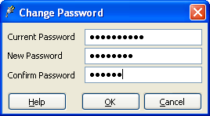

Modifier le mot de passe

Pour modifier votre mot de passe, complétez les étapes suivantes :
- Saisissez votre mot de passe actuel dans le champ Mot de passe actuel.
- Saisissez le nouveau mot de passe dans le champ Nouveau mot de passe.
- Saisissez de nouveau votre mot de passe, cette fois dans le champ Confirmez le mot de passe.
- Cliquez sur le bouton OK.
Bonne pratique
Une bonne pratique est de configurer un mot de passe pour protéger vos données,
y compris dans un environnement sûr tel que chez vous. Au travail, vous devez
avoir une bonne politique de mots de passe pour ne pas laisser de brèches
permettant d'accéder à vos données.
pgAdmin ne force aucune restriction sur les mots de passe. Néanmoins, nous
recommendons les lignes de conduite suivantes pour sélectionner un mot de passe.
Ceci n'est pas une liste exhaustive et ne garantie pas votre sécurité.
- Assurez-vous que les mots de passe soient assez longs, six caractères
étant un minimum.
- Assurez-vous que les mots de passe ne sont pas facilement dévinables par
d'autres et ne sont pas ouverts aux attaques par dictionnaire. Utilisez un
ensemble de lettres en majuscule et minuscule, ainsi que des chiffres.
Évitez les mots et les noms. Pensez à utiliser la première lettre de chaque
mot d'une phrase dont vous vous souviendrez facilement mais que les autres
ne peuvent pas deviner.
- Assurez-vous de modifier régulièrement votre mot de passe, au moins une
fois tous les 90 jours.